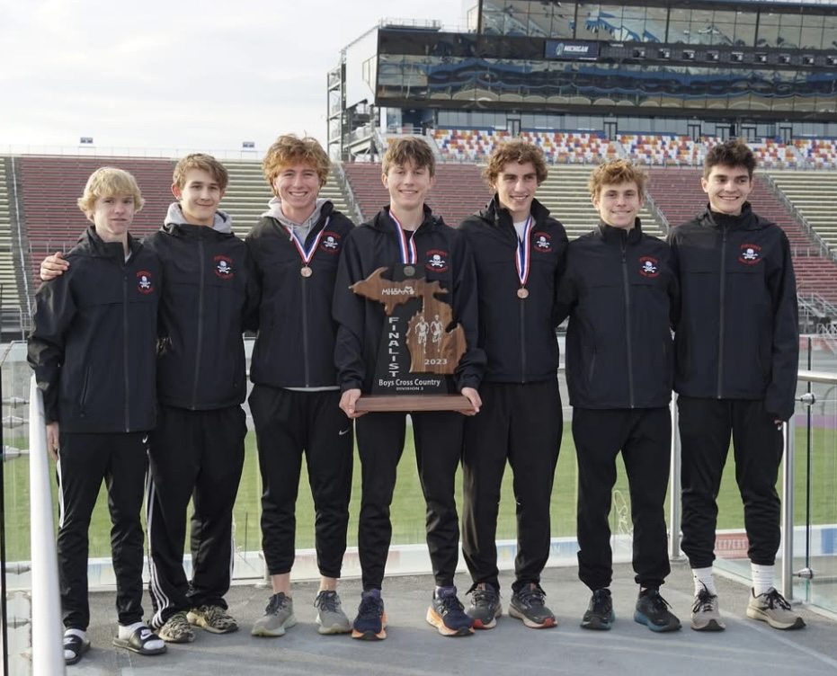

Notable Alumni
The PCHS Cross Country program has developed many athletes to become faster and better,
and many Pinckney runners have gone on to run for NAIA, D2, and D1 collegiate programs
- Evan Loughridge - Graduated 2024 - Michigan State University
- 6x All-State (2x XC + 4x Track)
- Ranked one of the fastest runners in the state of Michigan
- 3rd fastest runner in PCHS history
- Paul Moore - Graduated 2024 - SCAD University
- 1x All-American
- 6x All-State
- 3200m Track State Champion
- 1600m Track State Runner-up
- Ranked the fastest runner in the state of Michigan
- 2nd fastest runner in PCHS history
- Ethan Sandula - Graduated 2024 - Oakland University
- 4x All-State
- Ranked one of the fastest runners in the state of Michigan
- 5th fastest runner in PCHS history
- Caleb Jarema - Graduated 2021 - University of Michigan
- Fastest runner in PCHS history
- 8x All-State
- XC State Champion
- Varsity runner on the University of Michigan XC and Track Team
- Won Gold Medal u21 olympics
- Gavin White - Graduated 2021 - Columbia University

A picture of the 2023 XC Season, after the team got 2nd at States.
In the middle there is Oakland University's runner Ethan Sandula,
SCAD's runner Paul Moore, and Michigan State University's runner Evan Loughridge.